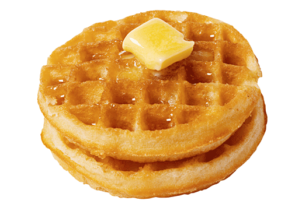

Waffles

Description
This waffle recipe is the only one you'll need to make homemade waffles with your waffle iron. Simple pantry ingredients mix up quickly in this easy batter that can be used right away or stored in the refrigerator for up to a week. Serve waffles hot with whipped cream and fresh fruit or with butter and maple syrup for either breakfast, brunch, or a snack.
Ingredients
- 2 whole eggs
- 2 cups all-purpose flour and 1 cup whole milk
- 2 tbsp vegetable oil
- 1 cup sugar
- Salt, as per taste
- Dash of vanilla essence
- Cooking Spray- spray the waffle iron before you start making the waffles
Steps:
- Step 1:Make the batter: Whisk the eggs, then add the flour, milk, and oil. Whisk in the sugar. Stir in the remaining ingredients.
- Step 2:Make the waffles: Pour the batter onto the hot, prepared waffle iron. Cook until golden brown and repeat with the remaining batter.
- Step 3: Serve the waffle with toppings of your choice